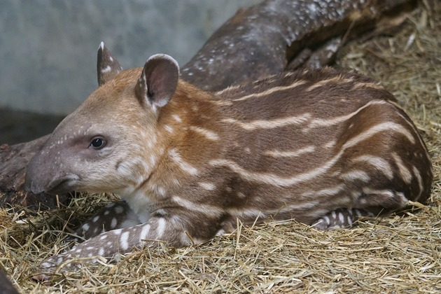
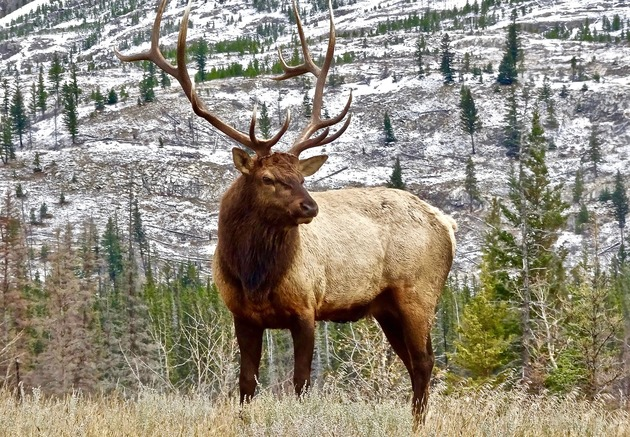

Anta
Tapirus terrestris
| Reino: | Animalia |
| Classe: | Mammalia |
A anta-brasileira ou simplesmente
anta (nome científico:
Tapirus terrestris), também conhecida por
tapir, é um mamífero perissodáctilo da família Tapiridae e gênero Tapirus. Ocorre desde o
sul da Venezuela
até o norte da Argentina, em áreas abertas ou florestas próximas a cursos d'água, com abundância de
palmeiras.
É o maior mamífero terrestre do Brasil e o segundo da América do Sul, tendo até 300
kg de peso e 242 cm de comprimento. Se diferencia das outras espécies do gênero Tapirus por possuir
uma crista sagital proeminente e uma crina. Apresenta uma probóscide, que é usada para coletar alimento. É o
último animal da megafauna na Amazônia e possui uma dieta frugívora, e tem um papel importante na dispersão
de sementes, principalmente de palmeiras. Seus predadores são grandes felinos como a onça-pintada
(Panthera onca) e a onça-parda (Puma concolor). É um animal solitário e vive em
territórios de 5 km² de área,em média. A anta tem reprodução lenta, com uma gestação que pode durar mais de
400 dias e parem apenas um filhote por vez, que pesa entre 3,2 e 5,8 kg. Podem viver até 35 anos de idade.
Alce
Alces alces
| Reino: | Animalia |
| Classe: | Mammalia |
O alce (nome científico: Alces alces) é um
cervídeo, o maior dos cervos, podendo atingir mais de 2 metros de altura ao nível das escápulas e pesar mais
de 450kg sendo que os idosos podem ultrapassar aos 500kg (no caso dos machos; as fêmeas são menores).
Distingue-se dos restantes membros da família pelo tipo particular de galhadas: geralmente presentes apenas
nos machos, têm secção cilíndrica e formato de taça e podem atingir 1,60 m de amplitude. O alce é um animal
típico das regiões circumpolares. Na Europa, ocorre essencialmente na Finlândia, na Suécia e na Noruega. Ao
contrário do que se possa pensar, as suas longas hastes servem para amenizar a temperatura corporal no
verão. A longevidade do alce é, em média, de 20 anos.
Estes ruminantes têm pernas longas e pescoço curto, o que os impede de pastar das
ervas rasteiras. Alimentam-se de rebentos e folhas de árvores e de plantas aquáticas, pelo que se encontram
essencialmente em florestas ou na sua proximidade. O seu comportamento é geralmente tímido, mas os machos
podem tornar-se violentos durante a época de acasalamento e as fêmeas defendem as crias de qualquer
aproximação humana. No entanto, o principal perigo que os alces representam para o ser humano é na estrada,
onde podem provocar graves acidentes, sobretudo na primavera, quando aproveitam como compensação nutricional
o sal lançado no pavimento de algumas estradas na América do Norte.